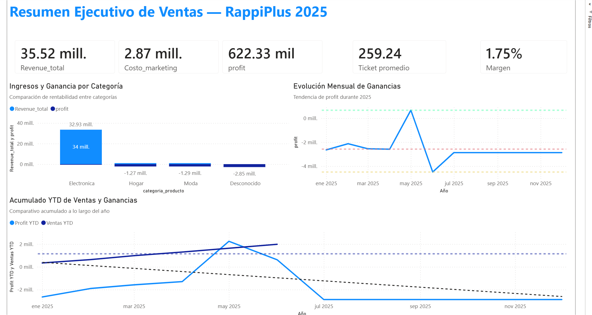
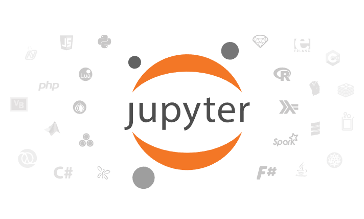
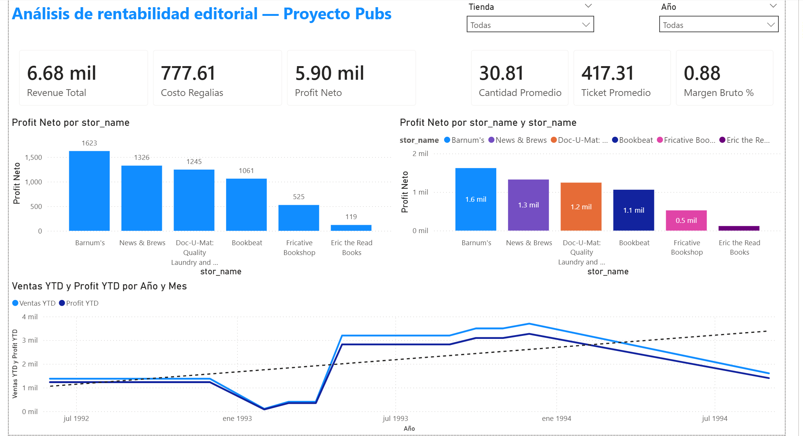
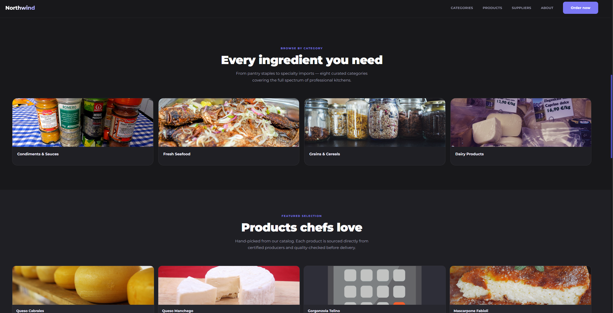

Miguel Angel Guillen Valdez
Analista de Datos | Desarrollador de Software
Celular: (+52) 449-547-52-36
Ubicacion: Mexico, Ags
Análisis de datos con formacion en entornos industriales y ventas. Competente en el manejo de datos, creación de dashboard/reportes y desarrollo de KPI's
Cuento con experiencia en herramientas como Excel a nivel intermedio-avanzado, SQL Python, Power BI. 3 Años de experiencia en tecnologias Angular, .NET, control de versiones con Git/Gitea
Experiencia en el servicio al cliente y la resolución de problemas informaticos con soluciones tecnológicas en entornos productivos dando visibilidad a problemas desconocidos y mejorando problemas de calidad
Proyectos
Resumen ejecutivo de ventas wallmart - 2012

El objetivo era conocer las ventas por m² por departamento y su participacion en el periodo del año 2012, para ello se realizo un analisís y se creo un dashboard interactivo
Herramientas: Excel, Tablas dinamicas, Graficas, Formulas
Tipo Documento CSV/XLSX
Abrir proyectoAnálisis de desempeño y toma de decisiones de negocio — Proyecto RappiPlus

Analicé múltiples conjuntos de datos del servicio RappiPlus con el objetivo de evaluar su desempeño y apoyar decisiones de negocio basadas en datos. El análisis abarca desde la rentabilidad del negocio hasta el comportamiento del usuario dentro de la plataforma, pasando por retención y validación estadística de experimentos.
Herramientas: Python (pandas, numpy, scipy, statsmodels), SQL (PostgreSQL), Jupyter Notebook
Tipo Jupyter Notebook/Power Bi
Abrir proyectoAnálisis de ventas y rentabilidad — Proyecto Northwind

Analicé cuatro datasets de la base de datos ficticia Northwind. El objetivo fue limpiar los datos y calcular KPIs clave de ventas para entender el comportamiento de ingresos, el impacto de los descuentos y el desempeño por producto.
Herramientas: Python (pandas, numpy), SQL Server, Jupyter Notebook
Tipo Jupyter Notebook
Abrir proyectoAnálisis de rentabilidad editorial — Proyecto Pubs

Analicé tres datasets de una editorial ficticia (Pubs) con el objetivo de evaluar la rentabilidad del catálogo de títulos y el desempeño de ventas por tienda. El análisis sirvió como base para la construcción de un dashboard en Power BI.
Herramientas: Python (pandas, numpy), SQL Server, Jupyter Notebook, Power BI
Tipo Jupyter Notebook/Power BI
Abrir proyectoLanding page Northwind

El proposito era manipular los datos de la base de datos ficticia Northwind y usar los datos previamente seleccionados para la creacion de una landing page con un estilo oscuro tipo night
Herramientas: Html, CSS, SQL Server, Bootstrap
Tipo Pagina web
Abrir proyecto